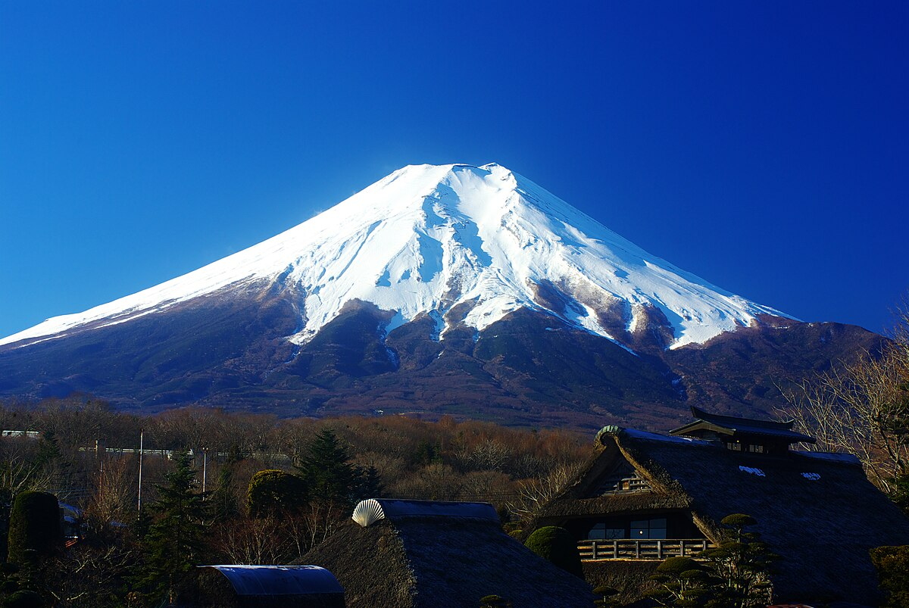
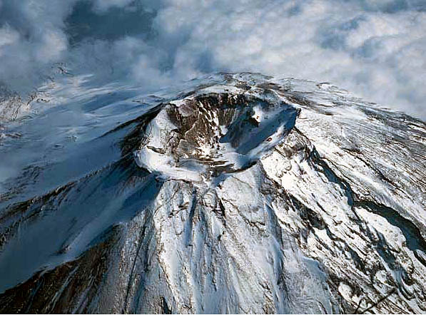
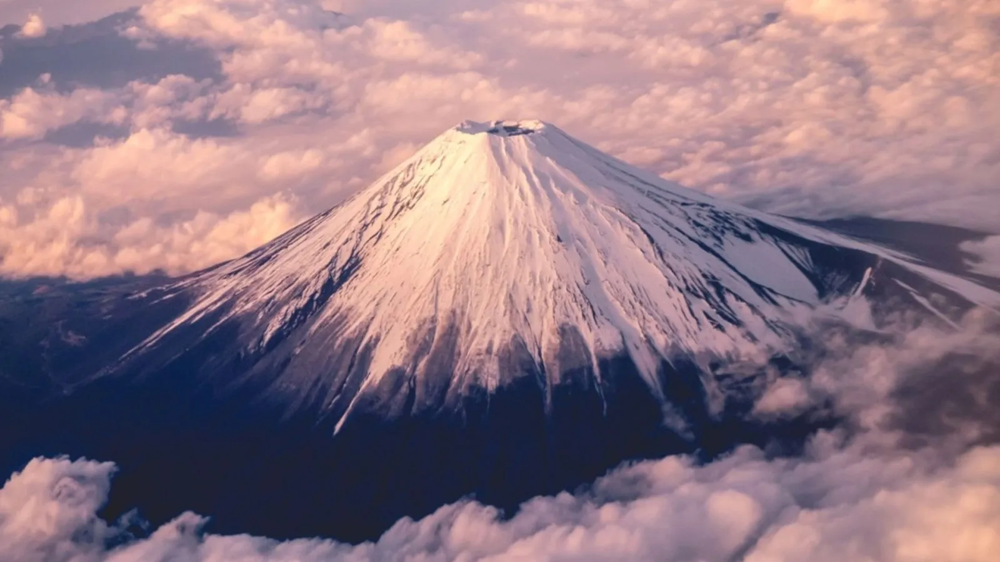
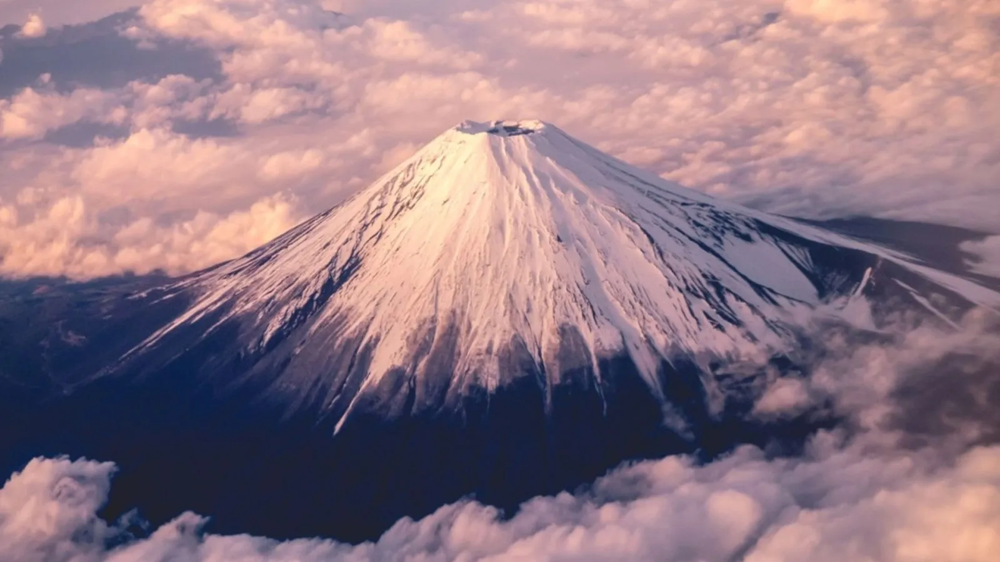
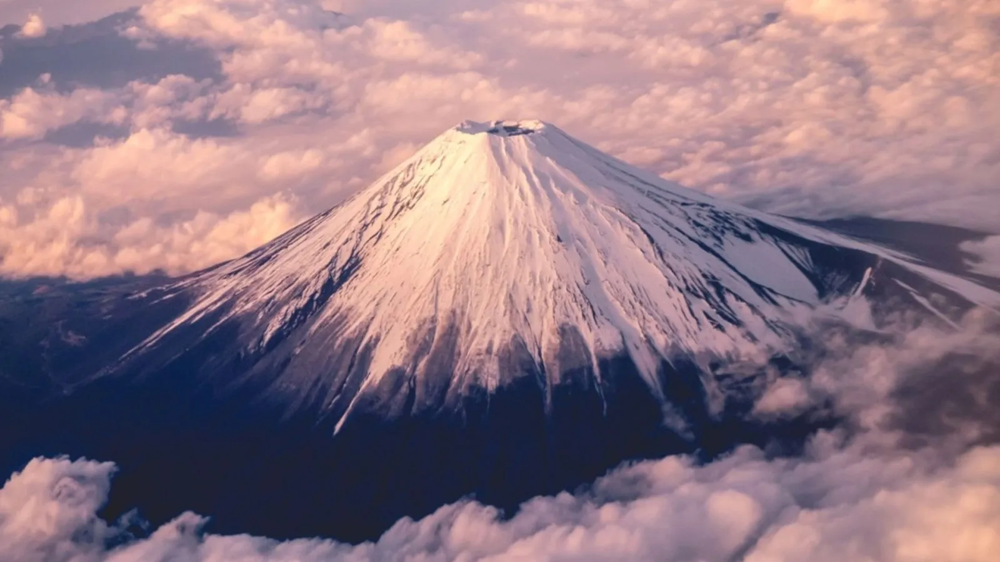

- Mount Fuji is Japan's tallest peak, 3,776 m (12,388 ft).
- It last erupted in 1707-1708.
- It has been honored for centuries in Shinto and Buddhist traditions, seen as a sacred site.
- It is easiest to see in winter due to the cold, dry, and clear air. The mountain's snow capped peak stands out, making winter a popular time to view the scenery. Unlike summer, when clouds and humidity often hide it, winter offers the most reliable views.
- It is considered one of Japan's 3 sacred mountains (Mount Fuji, Hakusan, and Tateyama).
- It grounds cover about 60,000 square meters (15 acres) and include 13 structures designated as Important Cultural Assets of Japan, meaning it was officially designated by the government as historically, artistically, and culturally significant, therefore protected under national law.


 



- Nara Park is in Nara City and famous for its free roaming deer and famous temples.
- When visitors feed the deers crackers, the deers bow before eating it
- Nara Park includes major historic temples including Todai-ji and shrines like Kasuga Taisha.
- Todai-ji means "Great Eastern Temple" and is a significant Buddhist temple complex in Nara and was historically an important center for Buddhism.
- Kasuga Taisha is a Shinto shrine in Nara and is dedicated to the deity responsible for the protection of the city.
- Beyond the offering hall (free of charge), there is a paid inner area which provides a closer view of the shrine's inner buildings. It is known for its red vermillion buildings and hanging bronze and stone lanterns.
- Osaka Castle was built in 1583 by warlord Toyotomi Hideyoshi on the site of the former Ishiyama Honganji Temple.
- It served as a strategic military stronghold and symbol of power during Japan's Azuchi-Momoyama period, which played a major role in the unification of Japan.
- The castle has been destroyed and rebuilt multiple times, including when Tokugawa forces attacked after Hideyoshi's death and when the main tower was struck by lightning in 1665 and burned down.
- The castle grounds cover about 60,000 square meters (15 acres).
- The inside of the castle has a museum with exhibits on samurai armor, weapons, and artifacts from the Azuchi-Momoyama period.
- It rises about 55 meters above ground and includes an observation deck on the top floor, where visitors can look at the view of the city and surrounding castle grounds.